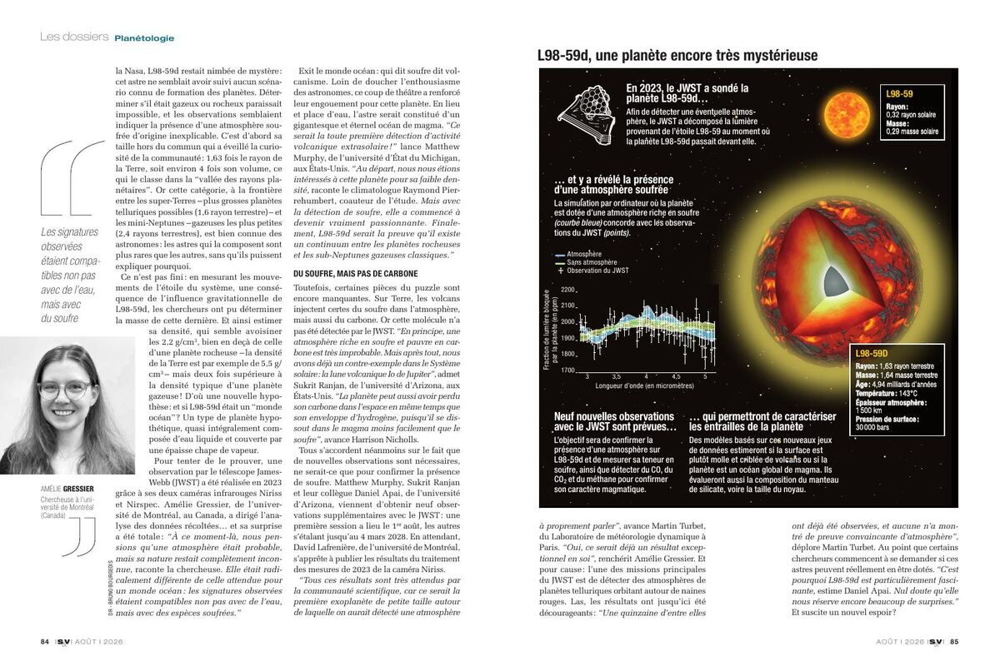
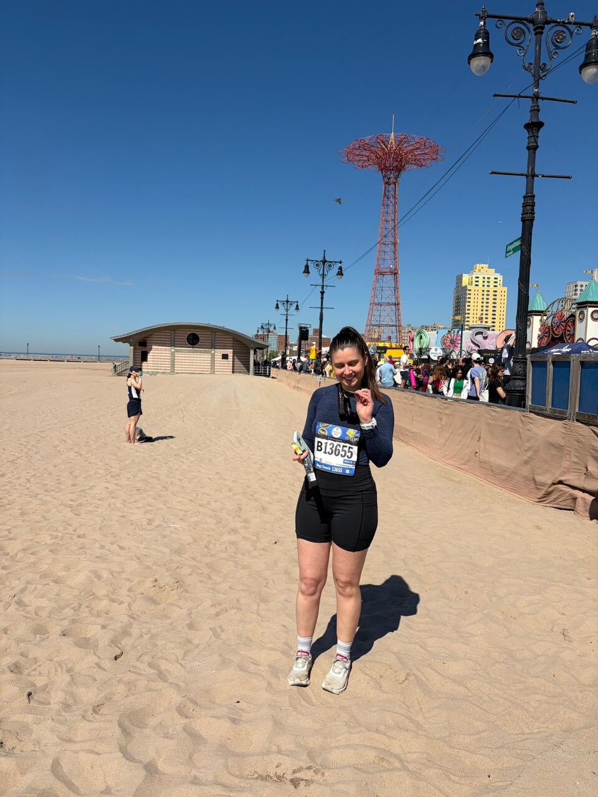

01
From sub-Neptunes to rocky worlds
I study the atmospheric and evolutionary pathways that connect gas-rich sub-Neptunes, bare rocky planets, and worlds that may retain secondary atmospheres.
Trottier Fellow · IREx · Université de Montréal
I am an observational astrophysicist studying how atmospheres form, evolve, and disappear — from gaseous sub-Neptunes to rocky worlds.
Research
My work follows planetary atmospheres from their escaping upper layers to the deep regions probed in emission and transmission.
I study the atmospheric and evolutionary pathways that connect gas-rich sub-Neptunes, bare rocky planets, and worlds that may retain secondary atmospheres.
I connect detector-level behaviour and time-series systematics to atmospheric retrievals, making the faintest signals from JWST scientifically interpretable.
From escaping upper atmospheres in the ultraviolet to deeper layers in the infrared, I combine HST, JWST, and ground-based observations to trace atmospheric loss and retention.
Selected publications
JWST · NIRSpec G395H · H₂O, CO₂, and SO₂
JWST · NIRISS SOSS eclipse spectroscopy
JWST · NIRSpec G395H · Small-planet atmospheres
HST · STIS · Upper-atmosphere physics
Science outreach
I enjoy bringing exoplanet discoveries beyond the research community — through public talks, interviews, and media stories that connect new observations to the bigger picture of how planets form and evolve.

CV & experience
My path spans aerospace engineering, ultraviolet spectroscopy, and the first years of JWST exoplanet science.
Download full CVLeading an independent program on the atmospheres and evolution of small exoplanets.
JWST Telescope Scientist Team and NIRSpec GTO science; time-series methods from detector behaviour to atmospheric interpretation.
Atmospheric escape, Hubble spectroscopy, and the transition from super-Earths to sub-Neptunes.
Master’s in Astrophysics · Observatoire de Paris
Engineering degree · École Nationale de l’Aviation Civile

Beyond research
When I am not studying distant worlds, I run long distances. I completed the 2025 New York City Marathon, followed by the NYC Half and Brooklyn Half in 2026.
Contact